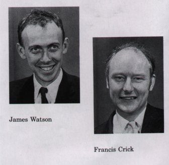
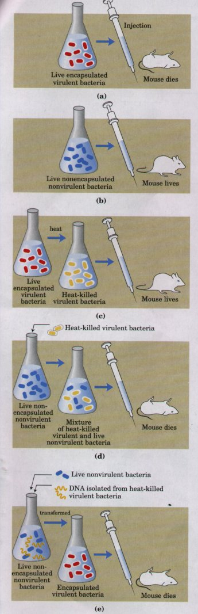
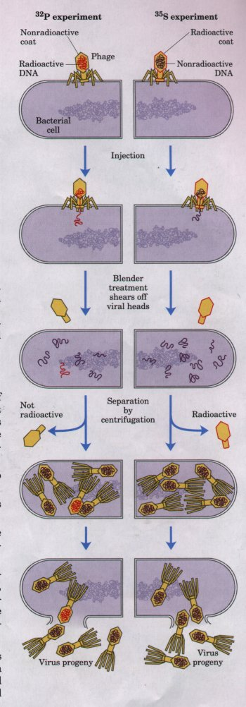
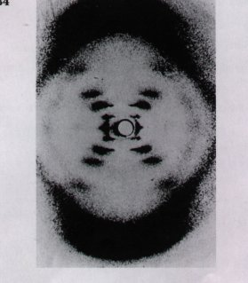
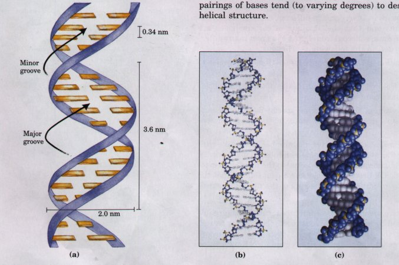
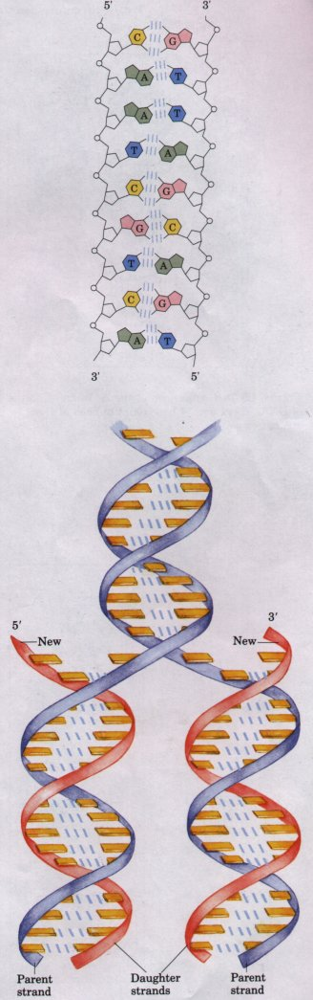
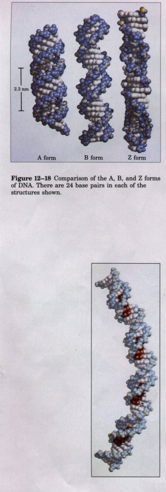

 The discovery of the structure of DNA by Watson and Crick in 1953 was a momentous event in science, an event that gave rise to entirely new disciplines and influenced the course of many others. Our present understanding of the storage and utilization of a cell's genetic information is based on work made possible by this discovery. Although information pathways are not treated in detail until Part IV of this book, the outline of these pathways presented in Chapters 1 and 3 is now a prerequisite for discussion of any area of biochemistry. Here, we concern ourselves with DNA structure itself, events that led to its discovery, and more recent refmements in our understanding. RNA structure will also be introduced.As in the case of protein structure (Chapters 6 and 7), it is sometimes useful to describe nucleic acid structure in terms of hierarchical levels of complexity (primary, secondary, tertiary). The primary structure of a nucleic acid is its covalent structure and nucleotide sequence. Any regular, stable structure taken up by some or all of the nucleotides in a nucleic acid can be referred to as secondary structure. All of the structures considered in the following pages of this chapter fall under the heading of secondary structure. The complex folding of large chromosomes within the bacterial nucleoid and eukaryotic chromatin is generally considered tertiary structure; this is considered in Chapter 23. |
| The biochemical investigation of DNA
began with Friedrich Miescher, who carried out the first
systematic chemical studies of cell nuclei. In 1868
Miescher isolated a phosphorus-containing substance,
which he called "nuclein," from the nuclei of
pus cells (leukocytes) obtained from discarded surgical
bandages. He found nuclein to consist of an acidic
portion, which we know today as DNA, and a basic portion,
protein. Miescher later found a similar acidic substance
in the heads of salmon sperm cells. Although he partially
purified the nucleic acid and studied its properties, the
covalent (primary) structure of DNA (as shown in Fig.
12-7) did not become known with certainty until the late
1940s. Miescher and many others suspected that nuclein or nucleic acid was associated in some way with cell inheritance, but the first direct evidence that DNA is the bearer of genetic information came in 1944 through a discovery made by Oswald T. Avery, Colin MacLeod, and Maclyn McCarty. These investigators found that DNA extracted from a virulent (disease-causing) strain of the bacterium Streptococcus pneumoniae, also known as pneumococcus, genetically transformed a nonvirulent strain of this organism into a virulent form (Fig. 12-12). Avery and his colleagues concluded that the DNA extracted from the virulent strain carried the inheritable genetic message for virulence. Not everyone accepted these conclusions, because traces of protein impurities present in the DNA could have been the actual carrier of the genetic information. This possibility was soon eliminated by the finding that treatment of the DNA with proteolytic enzymes did not destroy the transforming activity, but treatment with deoxyribonucleases (DNAhydrolyzing enzymes) did. A second important experiment provided independent evidence that DNA carries genetic information. In 1952 Alfred D. Hershey and Martha Chase used radioactive phosphorus (32P) and radioactive sulfur (35S) tracers to show that when the bacterial virus (bacteriophage) T2 infects its host cell, E. coli, it is the phosphorus-containing DNA of the viral particle, not the sulfur-containing protein of the viral coat, that actually enters the host cell and furnishes the genetic information for viral replication (Fig. 12-13). These important early experiments and many other lines of evidence have shown that DNA is definitely the exclusive chromosomal component bearing the genetic information of living cells. |
 |
Figure 12-12 The Avery-MacLeod-McCarty experiment. When injected into mice, the encapsulated strain of pneumococcus (a) is lethal, whereas the nonencapsulated strain (b) is harmless, as is the heat-killed encapsulated strain (c). Earlier research by the bacteriologist Frederick Griffith had shown that adding heat-killed virulent bacteria (which alone are harmless to mice) to a live nonvirulent strain permanently transformed the latter into lethal, virulent, encapsulated bacteria (d). He concluded that a transforming factor in the heatkilled virulent bacteria had gained entrance into the live nonvirulent bacteria and rendered them virulent and encapsulated. Avery and his colleagues identified the Griffith transforming factor as DNA. (e) They extracted the DNA from heat-killed virulent pneumococci, removing the protein as completely as possible, and added this DNA to nonvirulent bacteria. The nonvirulent pneumococci were permanently transformed into a virulent strain. The DNA evidently gained entrance into the nonvirulent bacteria, and the genes for virulence and capsule formation became incorporated into the chromosomes of the nonvirulent bacteria. All subsequent generations of these bacteria were therefore virulent and encapsulated.
 A most important clue to the structure of DNA came from the work of Erwin Chargaff and his colleagues in the late 1940s. They found that the four nucleotide bases in DNA occur in different ratios in the DNAs of different organisms and that the amounts of certain bases are closely related. These data, collected from DNAs of a great many different species, led Chargaff to the following conclusions:1. The base composition of DNA generally varies from one species to another. 2. DNA specimens isolated from different tissues of the same species have the same base composition. 3. The base composition of DNA in a given species does not change with the organism's age, nutritional state, or changing environment. 4. In all DNAs, regardless of the species, the number of adenine residues is equal to the number of thymine residues (that is, A = T), and the number of guanine residues is equal to the number of cytosine residues (G = C). From these relationships it follows that the sum of the purine residues equals the sum of the pyrimidine residues; that is, A + G = T + C. These quantitative relationships, sometimes called "Chargaff s rules," were confirmed by many subsequent researchers. They were a key to establishing the three-dimensional structure of DNA and yielded clues to how genetic information is encoded in DNA and passed from one generation to the next. Figure 12-13 Summary of the Hershey-Chase experiment. Two batches of isotopically labeled bacteriophage particles were prepared. One was labeled with 32P in the phosphate groups of the DNA and the other with 35S in the sulfur-containing amino acids of the protein coats (capsids). (Note that DNA contains no sulfur, and viral protein no phosphorus.) The two batches of labeled phage were then added to separate suspensions of unlabeled bacteria. Each suspension of phage-infected cells was agitated in a blender to shear the viral capsids from the bacteria. The bacteria and empty viral coats (ghosts) were then separated by centrifugation. The cells infected with the 32P-labeled phage were found to contain 32P, indicating that the labeled viral DNA had entered the cells, and the viral ghosts contained no radioactivity. The cells infected with 35S-labeled phage were found to have no radioactivity after blender treatment, but the viral ghosts contained 35S. Progeny virus particles were produced in both batches of bacteria some time after the viral coats were removed, thus the genetic message for their replication had been introduced by viral DNA, not by viral protein. |
| To shed more light on the structure of DNA, Rosalind Franklin and Maurice Wilkins used the powerful method of x-ray diffraction (see Box 7-3) to analyze DNA crystals. They showed in the early 1950s that DNA produces a characteristic x-ray diffraction pattern (Fig. 12-14). From this pattern it was deduced that DNA polymers are helical with two periodicities along their long axis, a primary one of 0.34 nm and a secondary one of 3.4 nm. The pattern also indicated that the molecule contains two strands, a clue that was crucial to determining the structure. The problem then was to formulate a three-dimensional model of the DNA molecule that could account not only for the x-ray diffraction data but also for the specific A = T and G = C base equivalences discovered by Chargaff and for the other chemical properties of DNA. |  Figure 12-14 The x-ray diffraction pattern of DNA. The spots forming a cross in the center denote a helical structure. The heavy bands at the top and bottom correspond to the recurring bases. |
In 1953 Watson and Crick postulated a three-dimensional model of DNA structure that accounted for all of the available data (Fig. 12-15). It consists of two helical DNA chains coiled around the same axis to form a right-handed double helix (see Box 7-1 for an explanation of the right- or left-handed sense of a helical structure). The hydrophilic backbones of alternating deoxyribose and negatively charged phosphate groups are on the outside of the double helix, facing the surrounding water. The purine and pyrimidine bases of both strands are stacked inside the double helix, with their hydrophobic and nearly planar ring structures very close together and perpendicular to the long axis of the helix. The spatial relationship between these strands creates a major groove and minor groove between the two strands. Each base of one strand is paired in the same plane with a base of the other strand. Watson and Crick found that the hydrogen-bonded base pairs illustrated in Figure 12-11 are those that fit best within the structure, providing a rationale for Chargaff's rules. It is important to note that three hydrogen bonds can form between G and C, symbolized G≡C, but only two can form between A and T, symbolized A=T. Other pairings of bases tend (to varying degrees) to destabilize the doublehelical structure.

Figure 12-15 The Watson-Crick model for the structure of DNA. The original model proposed that there are 10 base pairs or 3.4 nm per turn of the helix. Subsequent measurements have shown that there are 10.5 base pairs or 3.6 nm per turn.(a) Schematic representation, showing dimensions of the helix. (b) Line model showing the backbone and stacking of the bases. (c) Space-filling model.
| In the Watson-Crick structure, the two
chains or strands of the helix are antiparallel; their
5',3'-phosphodiester bonds run in opposite directions.
Later work with DNA polymerases (Chapter 24) provided
experimental evidence, confirmed by x-ray
crystallography, that the strands are indeed
antiparallel. To account for the periodicities observed in the x-ray diffraction pattern, Watson and Crick used molecular models to show that the vertically stacked bases inside the double helix would be 0.34 nm apart and that the secondary repeat distance of about 3.4 nm could be accounted for by the presence of 10 (now 10.5) nucleotide residues in each complete turn of the double helix (Fig. 12-15a). As can be seen in Figure 12-16, the two antiparallel polynucleotide chains of double-helical DNA are not identical in either base sequence or composition. Instead they are complementary to each other. Wherever adenine appears in one chain, thymine is found in the other; similarly, wherever guanine is found in one chain, cytosine is found in the other. The DNA double helix or duplex is held together by two sets of forces, as described earlier: hydrogen bonding between complementary base pairs (Fig. 12-11) and base-stacking interactions. The specificity that maintains a given base sequence in each DNA strand is contributed entirely by the hydrogen bonding between base pairs. The basestacking interactions, which are largely nonspecific with respect to the identity of the stacked bases, make the major contribution to the stability of the double helix. The important features of the double-helical model of DNA structure are supported by much chemical and biological evidence. Moreover, the model immediately suggested a mechanism for the transmission of genetic information. The essential feature of the model is the complementarity of the two DNA strands. Making a copy of this structure (replication) could logically proceed by (1) separating the two strands and (2) synthesizing a complementary strand for each by joining nucleotides in a sequence specified by the base-paring rules stated above. Each preexisting strand could function as a template to guide the synthesis of the complementary strand (Fig. 12-17). These expectations have been experimentally confirmed, and this discovery was a revolution in our understanding of DNA metabolism. |
Figure 12-16 Schematic drawing of complementary antiparallel strands of DNA following the pairing rules proposed by Watson and Crick. The basepaired antiparallel strands differ in base composition: the left strand has the composition A3 T2 GI C3; the right, A2 T3 G3 Cl. They also differ in sequence when each chain is read in the 5'→ 3' direction. Note the base equivalences: A = T and G≡ C. In this and following illustrations, the hydrogen bonds between base pairs are often represented by sets of blue lines.  Figure 12-17 Replication of DNA as suggested by Watson and Crick. The parent strands become separated, and each forms the template for biosynthesis of a complementary daughter strand (in red). |
| DNA is a remarkably flexible molecule.
Considerable rotation is possible around a number of
bonds in the sugar-phosphate backbone, and thermal
fluctuation can produce bending, stretching, and
unpairing (melting) in the structure. Many significant
deviations from the Watson-Crick DNA structure are found
in cellular DNA, and some or all of these may play
important roles in DNA metabolism. These structural
variations generally do not affect the key properties of
DNA defined by Watson and Crick: strand complementarity,
antiparallel strands, and the requirement for A=T and G≡C
base pairs. The Watson-Crick structure is also referred to as B-form DNA. The B form is the most stable structure for a random-sequence DNA molecule under physiological conditions, and is therefore the standard point of reference in any study of the properties of DNA. 'Iwo DNA structural variants that have been well characterized in crystal structures are the A and Z forms (Fig. 12-18). The A form is favored in many solutions that are relatively devoid of water. The DNA is still arranged in a right-handed double helix, but the rise per base pair is 0.23 nm and the number of base pairs per helical turn is 11, relative to the 0.34 nm rise and 10.5 base pairs per turn found in B-DNA. For a given DNA molecule, the A form will be shorter and have a greater diameter than the B form. The reagents used to promote crystallization of DNA tend to dehydrate it, and this leads to a tendency for many DNAs to crystallize in the A form. Z-form DNA is a more radical departure from the B structure; the most obvious distinction is the left-handed helical rotation. There are 12 base pairs per helical turn, with a rise of 0.38 nm per base pair. The DNA backbone takes on a zig-zag appearance. Certain nucleotide sequences fold up into left-handed Z helices more readily than do others. Prominent examples are sequences in which pyrimidines alternate with purines, especially alternating C and G or 5-methyl-C and G. Whether A-form DNA actually occurs in cells is uncertain, but there is evidence for some short stretches (tracts) of Z-DNA in both prokaryotes and eukaryotes. These Z-DNA tracts may play an as yet undefined role in the regulation of the expression of some genes or in genetic recombination. |
 Figure 12-19 A model for the bending of DNA produced by poly(A) tracts. The bend here is produced by four (dA)5 tracts, separated by five base pairs. The adenine bases are shown in red. |